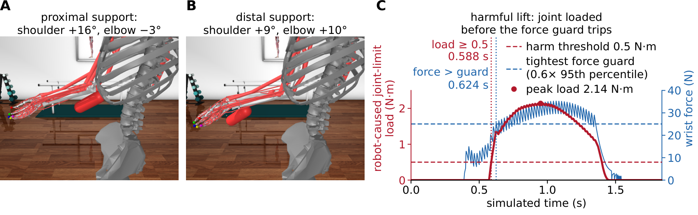
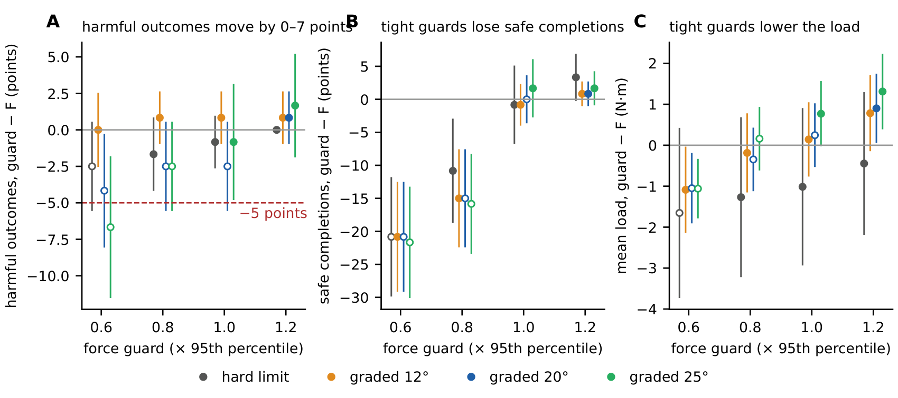
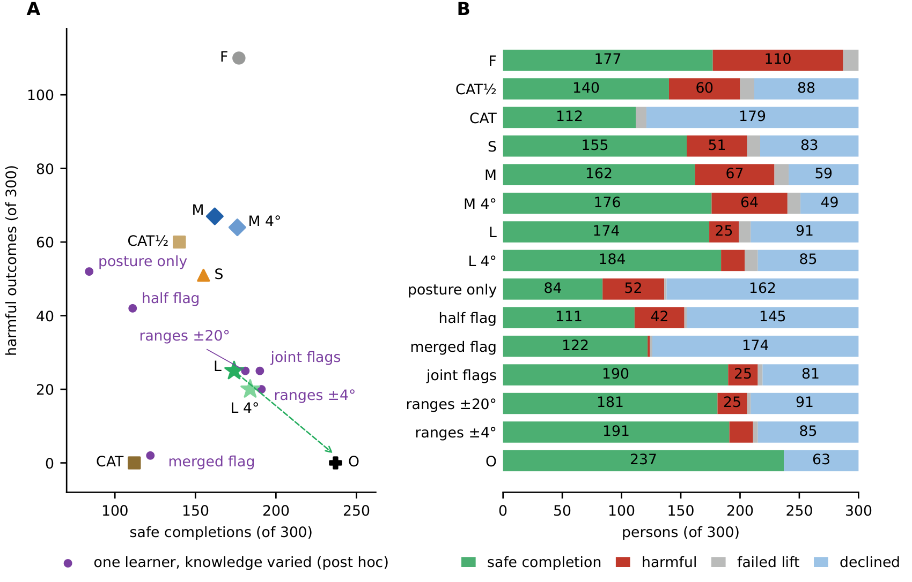
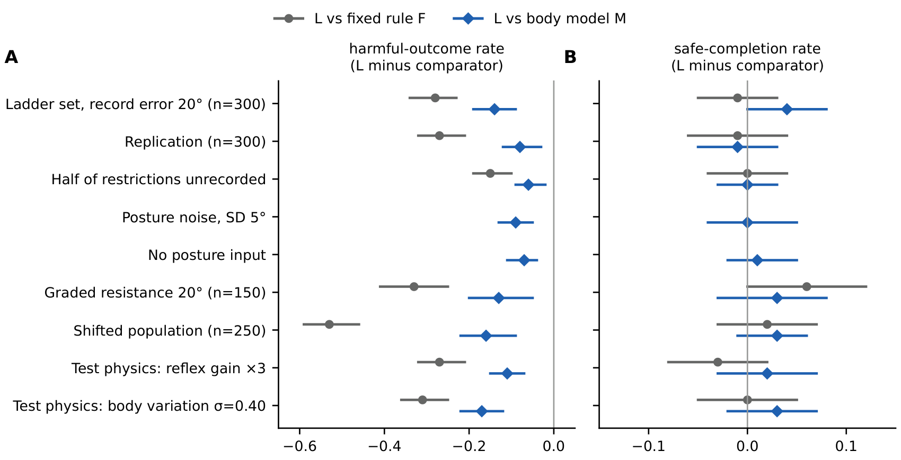

Physical human–robot interaction · simulation · Under review at Frontiers in Robotics and AI (Brief Research Report), manuscript 2019057 · peer review completed, both reviewers endorsed publication
A robot cannot feel its way to gentleness. When it supports a multi-joint limb from outside, the joint it loads is not on the axis of its force sensor. In a musculoskeletal simulation of a robot lifting the forearm of persons with restricted shoulders or elbows, the tightest force-magnitude guard lowered mean joint load by 29–36 % but moved harmful outcomes by only 0–7 points. With a complete care record, a policy learned offline reduced harmful outcomes from 110 to 25 of 300 new simulated persons, mainly by declining 91 of them. Safe completions were 174 vs. 177, and non-inferiority was not established. Everything is simulated, with one body structure.
Mu-Hua Wang · National Yang Ming Chiao Tung University · sole author
Same simulated person, two robots (0.25× speed). Left: the fixed rule, which knows nothing about the person, presses the restricted elbow to a peak load of 3.34 N·m. Right: the learned policy reads the care record, picks a different support and lifts with 0.00 N·m. One person of the 300-person ladder set (seed 2258), chosen as an illustration: not a statistic.
Many care recipients cannot move a shoulder or elbow freely, and a robot lifting their forearm can press a restricted joint into the end of its range. Contact-force limits do not sense that joint. A harmful outcome here is a robot-caused end-range joint load of at least 0.5 N·m, summed over shoulder elevation and elbow flexion: a mechanical-exposure proxy, not injury. A safe completion is a completed lift below it. Controllers ranged from a fixed rule that knows nothing, through a restriction flag and joint ranges with 20° error, to an oracle that knows every outcome, and all but the fixed rule and the force guards could decline.
of 300 new simulated persons, fixed rule vs. learned policy, complete record
learned policy vs. fixed rule; non-inferiority not established (−0.01 [−0.05, +0.03])
tightest force guard vs. fixed rule, while mean load fell 29–36 %
learned policy minus fixed rule, harmful-outcome rate, 300 further new persons [−0.32, −0.21]

The robot loads the joint before its force sensor notices. (A, B) Proximal support elevates mainly the shoulder; distal support also flexes the elbow. (C) One harmful lift of the fixed rule (seed 2222, restricted elbow): the joint-limit load passes 0.5 N·m at 0.588 s, before the wrist force exceeds the tightest guard threshold (25.05 N) at 0.624 s. One lift: not a statistic.

Tight guards lower the load and lose safe completions, while harmful outcomes change by at most 7 points. Paired differences from the fixed rule (95 % intervals), hard limit and graded end-range resistance of 12, 20 and 25°, 120 new persons per condition. Hollow markers: a post hoc non-superiority test to 5 points is inconclusive (6 of these 16 cells).
Over 600 persons and eight support sites (post hoc), 0.5 N·m corresponds to 0.8–4.8 N at the contact with the full lever arm; along the lift direction it is 1.6–6.8 N at the elbow and a median of 8 N at the shoulder (5th to 95th percentile 5–109 N). Most of these are small against a forearm-and-hand weight of about 17 N and guard thresholds of 25–50 N. Each guard prevented only 0–13 % of the fixed rule's harmful outcomes, and every harmful lift of the fixed rule stayed below the ISO/TS 15066 quasi-static force limit for the lower arm (160 N). Force limits remain necessary for contact safety; they are not sufficient for joints.
The lift of panel C, at 0.25× speed (seed 2222, not a statistic). In the 7 other harmful, elbow-restricted lifts examined when the videos were made, the load crossed 0.5 N·m 10–56 ms before the guard tripped in all 7.
Where the robot holds the arm decides which joint moves (panels A and B in motion; seed 104, unrestricted, 0.25× speed). Proximal: shoulder +16.0°, elbow −2.5°. Distal: shoulder +8.8°, elbow +9.6°.

The information ladder, 300 new simulated persons. (A) Lower right is better; purple points are one learner with the decision rule held fixed at six levels of knowledge (post hoc). (B) What happens to all 300 persons, declines included.
| Controller (ladder set, 300 persons) | Safe | Harmful | Declined |
|---|---|---|---|
| Fixed rule F (knows nothing) | 177 | 110 | 0 |
| Decline everyone flagged (CAT) | 112 | 0 | 179 |
| Population body model M (ranges, 20° error) | 162 | 67 | 59 |
| Learned policy L (ranges, 20° error) | 174 | 25 | 91 |
| Oracle O (knows every outcome) | 237 | 0 | 63 |
Declining everyone flagged removed every harmful outcome but 37 % of safe completions. The learned policy completed 62 more lifts safely at the cost of 25 harmful outcomes, so with a decline counted as free it is preferable while one harmful outcome weighs less than about 2.5 completions. Against the body model it had fewer harmful outcomes (−0.14 [−0.19, −0.09]) and no fewer safe completions (+0.04 [0.00, +0.08]).
The controllers above change their decision rule as well as their knowledge. Here one learner with one rule sees six levels of knowledge about each person. It lifts only if its predicted chance of a safe completion reaches τ, and declines otherwise. Raise τ and every level trades safe completions for fewer harmful outcomes; what differs is how good a trade each level can get.
| Learner knows | Safe | Harmful |
|---|
Of 600 new simulated persons (ladder set and replication); fixed rule: 348 safe, 218 harmful. Post hoc and descriptive: the curves are read on the same persons, not a confirmation test. Data: tau_sweep.json, copied from the public repository.
At no more than 46 harmful outcomes, posture alone allows 41 safe completions, one merged flag 280, per-joint flags 366 and ranges with 20° error 335. A merged flag adds most of the benefit and naming the joint adds the rest; with 20° error, the recorded degrees were not shown to add to the flags (harmful +0.01 [−0.01, +0.03], safe −0.02 [−0.04, 0.00]).

Learned policy minus fixed rule (grey) or body model (blue), paired 95 % intervals, in every prespecified confirmation condition of the locally kept protocol, without retraining.
On 300 further new persons the reduction against the fixed rule replicated (−0.27 [−0.32, −0.21]). It held in a shifted population with more and tighter restrictions (38 vs. 170 harmful of 250) and under graded end-range resistance. Safe completions relative to the fixed rule were −0.01 [−0.06, +0.04] in the replication, +0.02 [−0.03, +0.07] in the shifted population and +0.06 [0.00, +0.12] under 20° graded resistance. With half of the restrictions unrecorded, the reduction shrank from −0.27 to −0.15 (64 vs. 108 harmful), and declining everyone flagged harmed fewer persons than the learned policy (50 vs. 64) at 29 fewer safe completions.
Declining is a decision, not a failure (seed 2248, shoulder and elbow restricted, 0.25× speed, not a statistic). The fixed rule lifts and reaches 4.30 N·m; the learned policy's best predicted chance of a safe completion is 0.32, below its threshold of 0.65, so it hands the task back to a human carer.
Scope: simulation only (MuJoCo/MyoSuite), no robot or human data; one task with single-point support and a passive simulated person; training and test share one body structure and joint-limit geometry, so transfer to other bodies is untested; the complete care record is an idealisation, and harm is a mechanical-exposure proxy, not injury.